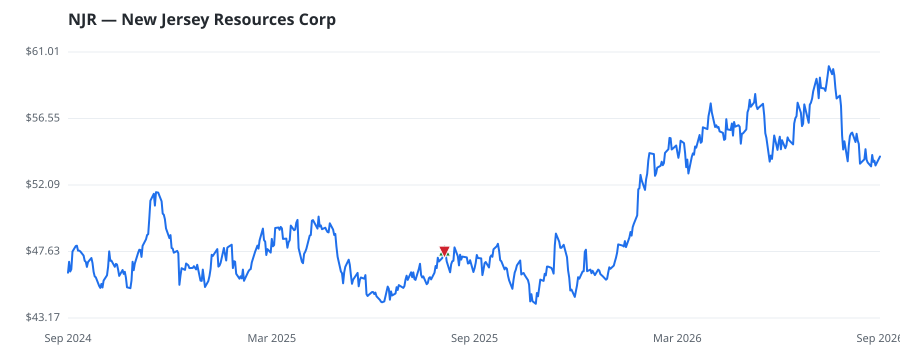

bullish · bearish · n/a — dots: price>SMA10 · SMA10>SMA50 · SMA50>SMA200 · up>down volume (20d)
Utilities · mid cap
Members who bought NJR earned a dollar-weighted +13.3% from their disclosure dates, versus +18.8% for the S&P 500 over the same holding windows (-5.5% alpha).

▲ green = a disclosed purchase · ▼ red = a disclosed sale (plotted on disclosure date)
New Jersey Resources is an energy services holding company with regulated and nonregulated operations. Its regulated utility, New Jersey Natural Gas, delivers natural gas to nearly 600,000 customers in the state. NJR's nonregulated businesses include investments in commercial solar projects and several large midstream natural gas projects. NATURAL GAS DISTRIBUTION · website
| Revenue | $1.4B | Net income | $335.6M |
|---|---|---|---|
| Operating income | $508.9M | Diluted EPS | $3.33 |
| Assets | $7.6B | Equity | $2.4B |
| Member | Chamber | Out-performer | Disclosed buys $ | Return on buys |
|---|---|---|---|---|
| Lisa McClain | house | — | $8K | +13.3% |
Disclosed $ figures are bracket midpoints — filings report ranges (e.g. $1,001–$15,000), not exact amounts.
| Fund | Fund alpha vs SPY | Position | % of book |
|---|---|---|---|
| Sourcerock Group LLC | +17% | $16M | 0.8% |
Hedge data: SEC EDGAR 13F · ranked funds beat SPY in >50% of their quarters · fund alpha = mirror-portfolio return minus SPY.